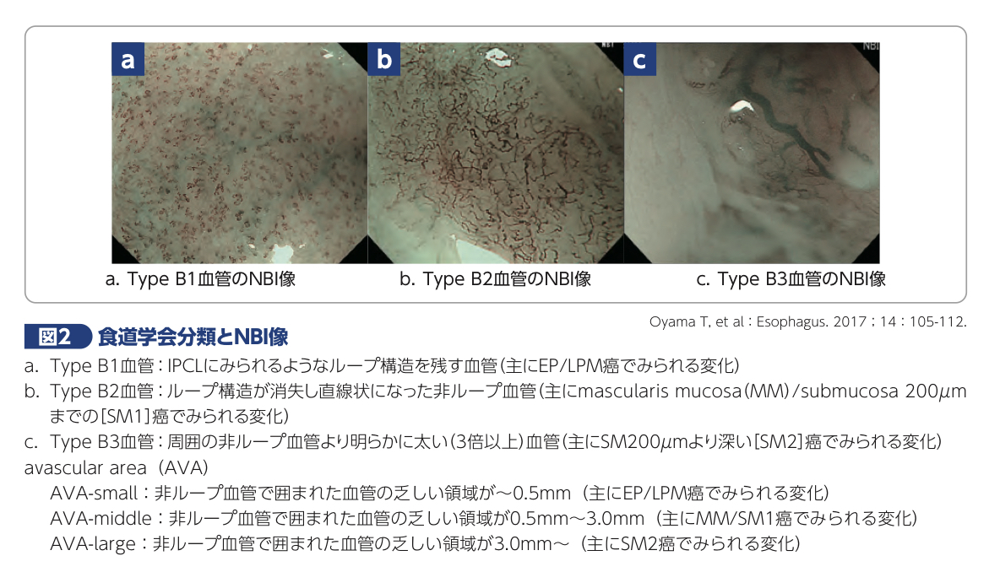
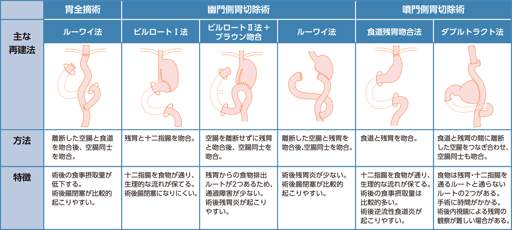
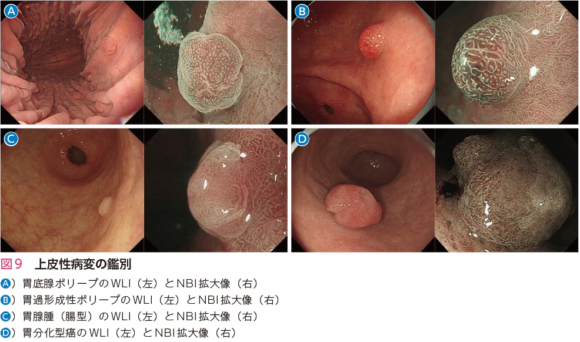
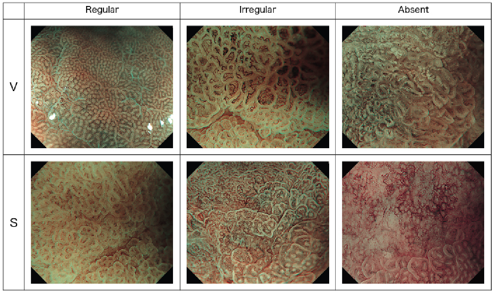
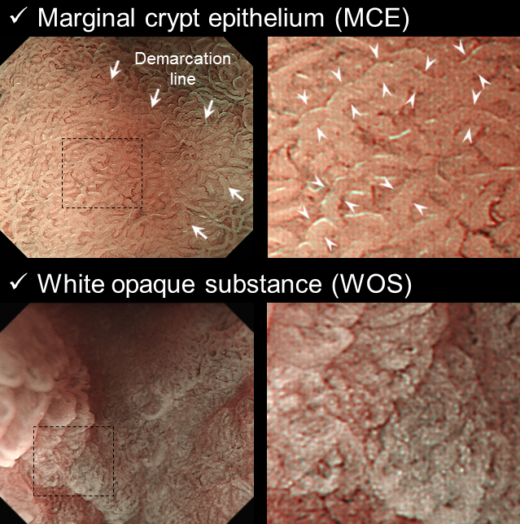
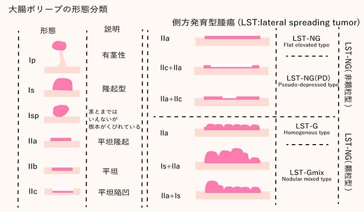

Microvascular pattern, Microsurface pattern
MV pattern 1.個々の形態 2.互いの形態(均一，対称性，規則的) 3.irregularかどうか．absentはWOSの存在によりMVが視認できない．MSで評価．
MS pattern 腺窩辺縁上皮(MCE)を微小血管同様に評価．
※WOS(white opague substance白色透明物質)：腸上皮化生に貯留した脂肪滴の乱反射による．


